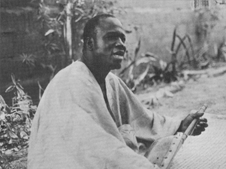

Variations in the poet’s position. Court poets. Freelance and wandering poets. Part-time poets.
This chapter is intended to give some account of the conditions in which African oral poets produce their works, and the audiences to which they address themselves. However, even the most summary account of this topic is a matter of great difficulty. This is partly because of sheer lack of data. Even those who have spent time and care recording African texts have frequently taken next to no interest in the position of the authors or reciters. A related but more profound cause of confusion lies in the popular images which underlie the work of many commentators on African oral literature, images which suggest some general and simple pattern to which these poets are expected to conform.
One commonly held view of the position of the poet among unlettered peoples seems ultimately to derive from the picture of the rhapsodist of the Homeric age. The bard is depicted as standing before the gathered lords to chant the heroic lays handed down through the generations, rewarded with honour and rich gifts. It seemed to some earlier writers natural to assume that African societies were at a certain evolutionary stage, one long since passed by Indo-European peoples, and that the type of poetry and of patronage apparently once found in the latter would be discoverable in the former. This image of the bard delivering his rude but stirring verses to barbaric audiences has gained a profound hold on the popular imagination from its vivid representation in literature as well as in scholarly works inspired by the concept of ‘the heroic age’.
There is another common image which presents an opposite picture. In this the poetry of non-literate peoples is seen as in some way arising directly and communally from the undifferentiated folk. In this case song is its own reward and the specialized role of the poet has not yet made its appearance.
In fact neither picture fits the varied nature of poetry in Africa: This will be immediately obvious: as soon as the question is raised it is self-evident that any study of the conditions and background of poetry in Africa can no longer afford to rely on such half-consciously held generalizations but must proceed to a much more rigorous and detailed investigation of the actual position of poets in the various societies. Some poets, it is clear already, are associated with royal courts and receive reward as professionals. Others depend on private enterprise, perhaps wandering from patron to patron and living on their wits. Others gain their basic livelihood from farming or cattle-keeping (or whatever the local basis of subsistence may be), but are marked out by their expert skill on special occasions. Finally, in some contexts poets are not set apart from their fellows in terms of training, reward, or position. Indeed, almost every category of relationship between poet and audience can be found in Africa in one context or another. These differences are not confined to different geographical areas but can be discovered even within a single society. Even in one culture (Hausa or Fulani, for instance, or, to a lesser extent, Ashanti) one can sometimes see the coexistence of a learned and a more popular tradition, and it is common for many different genres of poetry to be recognized simultaneously, each with its own type of performer, reward, and occasion. No single picture can cover all these variations and even the most cursory account of poetry in Africa must begin by insisting on the variety before going on to discuss certain common patterns.
I
The practice of poetic composition and performance as a specialist art is not uncommon in Africa. Poetry is, by and large, differentiated from prose as being marked by greater specialism. The most specialized genres of poetry occur in association with royal courts. The other familiar form of patronage—religion—is also relevant, but in an organized form it is less significant.
In the traditional kingdoms of Africa, with their royal courts and clearly marked differences in wealth, power, and leisure, court poetry flourished. Poets were attached to the courts of powerful kings, to the retinues of nobles or lesser chiefs, and to all those who had pretensions to honour and thus to poetic celebration in their society. The speciality of these court poets was, of course, panegyric, a form illustrated in the following chapter. One can cite the elaborate praise poems of the Zulu or Sotho in southern Africa, the poems of the official singers of the ruler of Bornu, the royal praises of the Hausa emirs, the eulogies addressed to rulers in the various kingdoms of the Congo, and many others. In all these areas the ruling monarchs and their ancestors were glorified in poems, and real and ideal deeds were attributed to them in lofty and effusive language. The court poets sometimes had other functions too. Preservation of the historical record and of genealogies, for example, was often a part of their art, and it is sometimes suggested that this was at times a distinctive activity carried on in its own right. But in spite of repeated assertions about this,1 there are few details about the actual performance or expression of historical poetry as distinct from panegyric, and we have to content ourselves with vague generalizations.2 It is clear, at least, that a knowledge of accepted history in the sense of the glorification of the great deeds of royal ancestors or present rulers was a necessary part of the cultivation of panegyric poetry, and that praise poems are a fruitful source of the currently authorized interpretations of certain historical events and genealogies. What we always come back to in the productions of these court poets is the adulatory aspect, giving rise to poetry of profound political significance as a means of political propaganda, pressure, or communication.
The actual position and duties of these court poets vary in different areas. In some cases a poet holds a single clearly recognized office among a ruler’s entourage. This was so with the Zulu and other Bantu kingdoms of southern Africa where not only the paramount king but also every chief with any pretensions to political power had, wherever possible, his own imbongi or praiser. This was an official position at the court, important enough to the rulers to have survived even the eclipse of much of their earlier power. The imbongi’s profession was to record the praise names, the victories, and the glorious qualities of the chief and his ancestors, and to recite these in lengthy high-sounding verse on occasions which seemed to call for public adulation of the ruler. The poet had two duties: to remember and to express the appropriate eulogies. Though these praises tended to have a set and recognized form (particularly those of dead rulers), the poet’s task did not consist of mere memorizing. The praises had no absolute verbal immutability, and emotional and dramatic force in actual recitation was expected of a successful imbongi. The lofty strain of these Zulu eulogies and the impressiveness of their delivery can be pictured from a few lines taken from the praises of a Zulu king; they glorify the swiftness and completeness of his victory over the foe:
Faster-than-the-sun-before-it-has-risen!
When it rose the blood of men had already been shed.
The Bush, ‘the Buck-catcher’, caught the men of Sekwayo’s.
He made men swim who had forgotten how,
Yes! even in the pools!…
The tobacco fields rotted even to pulp!
The wrapping-mats were finished at Banganomo;
At (the kraal) of Kuvukuneni,
At that at Mdiweni, even Vimbemsheni’s,
At that at Bukledeni,
At that at Panyekweni
(Grant 1927: 227)
In many West African kingdoms the pattern is more complicated. A whole band of poets is often involved, the various members making their own specialist contributions to the performance. Musical as well as verbal elements play a part, so that the skills of many different performers are necessary. Among the Ashanti, for instance, there were not only minstrels (kwadwumfo) to recount the deeds of past kings whenever the living king appeared in public, but also royal horn-blowers and a band of court drummers especially appointed as part of the ruler’s formal entourage and over whose performances he held a kind of monopoly. On state occasions these drummers provided both music and the type of ‘drum poems’ described in a later chapter—the drum-beats or notes of the horn being ‘heard’ as actual words, praising the ruler and his predecessors and commemorating the glorious victories of the past. Such performances were an essential part of state occasions: at state receptions at the palace or out of doors; in processions to display the regalia or visit some sacred spot; and at national festivals, state funerals, and political functions like the installations of new chiefs or the swearing of oaths of allegiance by sub-chiefs.3 Again, in the old and powerful kingdom of Dahomey there was not just one but a series of royal orchestras charged with praising the power of the royal dynasty, the high deeds of past kings, and the glory of the present ruler. Every morning in Abomey concerts were held by the main state orchestra before the royal palace, and when the king went out it accompanied him to sing his praises (Da Cruz 1954: 13). A final well-known West African example is that of the maroka teams of praisers still associated with the wealthy and cultivated Islamic emirates of the Hausa of Northern Nigeria. These highly specialized teams are attached permanently to the office of the king, and, to a lesser extent, to that of District Heads. Smith describes the king’s team:
The king’s musicians and maroka form an organized group containing one or more titular series and effective authority hierarchies. The group is both more numerous and specialized in its musical functions, and more permanently attached to the title, than are the teams linked to District headships, which are similarly organized. Many of the royal maroka proudly describe themselves as royal slaves, and point to the fact that their ancestors held titles as royal musicians under earlier kings. It seems that there is at least a core of such maroka hereditarily attached to the throne. The king’s musical troupe is also peculiar in containing one marokiya (female praiser), who formerly had the title of Boroka in Zaria, but is nowadays known as Zabiya (the guinea-hen) from the shrill ululating sound which it is her function to let out at odd moments, such as during the king’s address to his assembled subjects after Sallah. Other specialized musical functions in the royal troupe include blowing on the long silver horns or shorter wooden ones, playing on the taushe (a small hemispherical drum), and singing the royal praises in Fulani, the last being the task of maroka recruited from among the Bombadawa Fulani. Royal maroka are in constant attendance at the palace, and announce the arrival of distinguished visitors such as the Resident, Divisional Officer, District Chiefs, and the like, by trumpet fanfares, drumming, and shouting. They also salute the king on the Sabbath eve and nightly during the annual fast of Ramadan, when the royal drums (tambari) are regularly played. The king’s maroka address no one except their master, unless to herald visitors into his presence. They are allocated compounds, farm-lands, and titles by the king, who may also give them horses and frequently provides them with clothes, money, or assistance at weddings as well as with food …. As befits their position, the royal maroka are unique within the state and work only as a team
(Smith 1957: 31).4
In spite of differences in status and medium of expression, there are obvious similarities in the positions of all these court poets. They all depended on royal or chiefly patronage, given them in an official capacity and often implying exclusive rights over their services. Their performances were public with the emphasis, it appears, on their ceremonial functions rather than their entertainment value. And their audiences were primarily those who attended either the royal court or state occasions in the royal capital. To some extent this type of poetry must also have filtered down to other levels of society, with every local chief and leader attempting to follow the model of the ruler. But it seems that it was at the centre that court poetry and music were cultivated in their most specialized and exclusive form.
Many of these court poets seem to have been true professionals in the sense that they gained their livelihood from their art. Their official position at court presumably gave them a share in the greater luxury and leisure of court life, though the degree must have varied from area to area—more marked, say, in the wealthy and specialized Hausa emirates than in the kingdoms of southern Africa. However, the exact economic position of court poets is obscure. There is little detailed evidence about, for instance, the relative wealth of specialized poet and ordinary subject, or how far court poets could count on steady economic support as distinct from occasional lavish gifts. The whole subject merits further investigation.
The question of specialized training is also not very clear. That apprenticeship in some sense was involved is obvious, but this was probably sometimes of an informal kind, perhaps particularly when, as with the Hausa or the Yoruba, there was some hereditary tendency. In the case of highly specialized skills, however, there must also be a certain amount of quite formal training. This is so with Ashanti players of the speaking drums (Nketia 1963b: 156–7), the Fang mvet singers (Towo-Atangana 1965: 172), or the highly specialized bards of Ruanda.
It is worth considering the Rwanda school of poetry and its complex corporation of poets in some detail. They are among the few official poets of Africa whose life and learning have been described at all fully and they provide a striking instance of the specialized and learned artistic tradition which can develop in a once-termed ‘simple’ society.5
In the highly centralized traditional kingdom of Ruanda, the royal poets had their own association and were officially recognized as holding a privileged position within the state. They were in charge of the delivery and preservation of the dynastic poems whose main object was to exalt the king and other members of the royal line. This was only one branch among the three main types of Rwanda poetry (dynastic, military, and pastoral) which corresponded to the three pivots of their society (king, warrior, and cattle). It was in turn divided into three sub-types, different genres through which the king’s praises could be declaimed.
A court poet was known as umusizi w’Umwami (dynastic poet of the king). This category included a number of poets, both those with the inspiration and skill to compose original works, and those (the bards) who confined themselves to learning and reciting the compositions of others. The court poets have always had their own association—the Umutwe w’Abasizi, ‘band of dynastic poets’—comprising those families officially recognized as poetic. The office of president of this band, the Intebe y’Abasizi, was previously restricted to a member of the clan that was first traditionally associated with the profession of poet. More recently the president has been the most conspicuous of the royal poets, a role that has tended over the last few generations to become a hereditary one. The president had the responsibility of organizing the poetry officially needed by the royal court for any particular occasion, including both ceremonial affairs and discussions on points of tradition. This he was in a position to do because of the attachment of a number of official poets to the court. Each of the recognized families of the poetic association had to be permanently represented there, if not by a creative poet, at least by a bard capable of reciting the poems particularly known by that group. In the reign of Yuhi V Musinga, for example, there were nine royal poets holding such official positions, each on duty for a month. In addition there were a number of unofficial bards, also members of poetic families, who gathered in large numbers around the court and could be called on if necessary.
Both the poets themselves and the recognized poetic families had a privileged position in Rwanda society. They held hereditary rights like exemption from the jurisdiction of the civil chiefs and from certain servile duties. This applied even to ordinary bards and individual amateurs—so long as they were able to recite certain poems by heart, they were automatically regarded as direct servants of the crown. The exact economic position of the official court poets is not fully described; but the presentation of a poem to the king normally earned the gift of a cow—perhaps more—and in a society in which economic, social, even political worth was measured in terms of cattle, this was no mean reward.
The poems themselves were exceedingly elaborate and sophisticated, with a specialized mode of expression mastered only by the corporation of poets and the intelligentsia of the society. The style was full of archaisms, obscure language, and highly figurative forms of expression.6 The sort of sentiments and phraseology involved, elevating the king as the centre and ideal of Rwanda society, can be glimpsed from a few lines extracted from a long dynastic praise poem of the impakanizi genre:
Il me vient a l’esprit une autre parole du Roi,
Lui Source intarissable, fils de la Souveraine,
Je me suis rappelé que ce Refuge devait introniser un Roi,
Leguel deviendrait l’objet de mes hommages dès qu’investi.
Il n’y a pas d’époque où le Rwanda n’éprouve des perplexités,
O Artisan-des-lances, souche du Chef des Armées:
Personne ne jugera à l’encontre de ta décision.
En ce jour-là des préparatifs minutieux,
O Empoigneur-d’arc, descendance du Svelte,
Ta marche a brûlé les étapes accoutumées.
Un conflit armé dans le palais même s’était déclanché,
L’Irréprochable seul luttant en personne,
Nous, hommes, la terre faillit nous engloutir vivants.
(Kagame 1951b: 117–8)
The poems are clearly the conscious product of a learned and specialist intellectual tradition.
The skilled and separate nature of this poetry is further evident from the existence of specialist training, particularly in the skill of recitation. Among the Rwanda, somewhat unusually, part of the production of their oral literature was through memorization of received versions of the poems, and the attribution of personal authorship was the rule rather than the exception. The praise poems were often repeated by bards with little change from one occasion to the next, and there seems to have been a conscious effort to preserve the exact words of the text. From an early age, children of the recognized poetic families had to learn poems by heart. Though this took place within the family, at first at least, it was under the general supervision of the president of the association of poets who was ultimately responsible. Local representatives of the president called frequent gatherings in the open air at which the youths of the privileged poets’ families exhibited their art in recitation. Those who showed themselves to good advantage were given a reward by their family, perhaps even a cow as ‘récompense de félicitation’: In this way future court poets and reciters underwent a long and rigorous apprenticeship, one necessary both for the mastery of the actual poems already extant and for acquiring the vocabulary, imagery, and subject-matter which formed the traditional basis of any future composition.
In Ruanda then we see the development of a strikingly specialized class of court poetry, one designed not for everyday recitation to the people at large, but for performance among other members of this specialist group, and, above all, for the king himself. The royal court was the centre of patronage—in fact in most important genres of Rwanda poetry the court held a near monopoly—and the Rwanda assumed it to be basic to the production of specialist poetry, being both its central stimulus and its most valued context.
Clearly not all African court poetry took so highly specialized and restricted a form. But it can serve as an extreme instance of one important type of patronage for the poet in traditional Africa. It must be added, however, that this particular patronage—the royal court—is in many areas increasingly a thing of the past. This is not because of any decline of interest in poetry or in praise, for both continue to flourish in different contexts and with new patrons. Praise poems crop up as flattery of political leaders or party candidates, and can be heard on the radio or at political meetings; they can be seen in written form in newspapers; and they even appear under the auspices of commercial recording companies. But often the older royal courts with their official retinues and monopoly of the most highly professionalized poetry have become less attractive as political and economic centres, and many of the traditional court poets have either abandoned their art or turned to other more lucrative patrons.
II
Unlike court patronage, religious patronage in Africa is relatively limited. Islam, it is true, has in certain areas played a potent role in the stimulation of verse on religious and historical topics. But this has not been through the direct patronage of an organized church so much as through the historical association of Islam with Arabic culture in general, so that Islamic scholars were also sometimes engaged in the transmission within their own societies of local compositions based on Arabic models.7 These were primarily designed for the academic few, qualified by learning to produce or appreciate such pieces, and were often written down, though wider dissemination in other spheres of society sometimes took place orally. Among such peoples as the Swahili, Fulani, or Hausa it appears that such composers held honoured positions (and presumably also economic resources) primarily because of their Koranic learning, their association with royal courts, or, in some cases their noble birth.8
Ethiopia is one important exception. Here there is a long history of patronage of the arts by the Coptic Christian Church. This includes a vast amount of literature which, being in every sense a written one, falls outside the scope of this book. There was also, however, a certain amount of oral ecclesiastical poetry by the dabteras or professional religious poets. Besides long written poems their work also included oral compositions like extemporized hymns at church festivals and similar occasions. Their most famous product was the qene, a short witty poem, highly artificial, of which there were said to be at least ten different types. These were marked by great obscurity of style, extreme condensation, delight in the use of puns, and an abundance of metaphors and religious allusions. In keeping with their highly specialized nature the qene demanded prolonged intellectual training for their mastery, and we hear of schools of rhetoric designed to train poets in the art of qene composition. We may also suppose that their audiences were correspondingly restricted. Indeed it seems to be the other important class of professional Ethiopian poets, the non-religious azmaris, who were found among all classes of society and thus reached wider audiences (Chadwicks iii 1940: 524 ff) while the dabteras preserved their specialist and intellectual type of versification.
More recently, Christian missions have made their contribution to the encouragement of oral literature. As yet, this seems mainly to be of the more or less extempore type—a worshipper declaiming or leading the singing in the course of a service—and has probably not produced any highly specialized poets.9 But much more may yet come of this type of religious patronage, and it is possible that this might be one of the growing points in the further development of oral literature in Africa.
Apart from the patronage of these larger religious movements, we also find poetry evoked by more localized cults. This is particularly marked in the non-Islamic parts of West Africa where there are specialized cults to the deities of the various West African pantheons. Priests of some of the gods among, say, the Yoruba of Nigeria or Fon of Dahomey seem to be fully professional, sometimes to have undergone many years of training. This is true in particular of the priests of Ifa (described in Chapter 7) who spend at least three years as apprentices learning the lengthy verses and stories pertaining to this oracle-god. The gods each have their own lengthy and allusive praises which must be mastered by their priests, who are, it seems, responsible for both their recitation and, ultimately, their composition. Such professional priests receive direct or indirect recompense in virtue of their religious office and in this way have a certain amount of leisure to devote to the practice of poetry. However, fully professional priests are by no means the rule in these societies; they seem to be more typical of the highly organized and wealthy kingdoms, like those of the Akan, Fon, or Yoruba. But even in these areas priests are often only part-time experts who also rely on other means of subsistence. Their relationship to their public is more like that discussed in section iv below: they are experts who only appear on particular occasions when they display their art in return for direct reward.
In spite of some exceptions, one cannot really speak of religion as having the same outstanding connection with the arts in Africa as it has sometimes held elsewhere. In terms of specialization of the poet’s role or of the complexity of the verse itself, it does not seem to be anything like as important as royal and courtly patronage. The interpretation of poetry which connects it directly with the religious role of the seer would not, therefore, in its obvious sense at least, derive much support from the data on oral literature in Africa.
III
Another large category among oral poets in Africa is that of the freelance specialist, a poet who moves from place to place according to where he can find a wealthy patron or audience prepared to reward him in return for his poems. This type of poet may shade into the official court poet, but even if he spends a certain amount of time at the courts he does not hold an official and exclusive position. He relies on occasional rather than permanent employment. Such independent professional poets are particularly common in West Africa, the coastal areas of East Africa, and Ethiopia, where both the degree of specialization and the existence of relatively large quantities of movable wealth from which poets can be subsidized make it feasible for them to gain a livelihood in this manner. The existence of court poets may actually facilitate the development of this type of freelance professional tradition. Court poetry is what local chieflets or wealthy commoners would like to hear declaimed around them; and many of those wondering singers and poets have found lucrative patrons in men who wish to hear addressed to themselves some semblance of the praises ultimately due to the rulers. It is not surprising then to find frequent instances of the coexistence in one society of both official poets at courts, and roving poets in other spheres of the kingdom. This is true, for instance, of the Hausa roaming singers, the counterparts of the royal praise bands already mentioned. Among the Nzakara of the Sudan the trained professional poet, a singer accompanying his words on the harp, gains his livelihood either at the court of the prince or, alternatively, by moving from village to village, ready to vilify a chief who does not entertain him up to the standard of his expectations, or singing the glorious ancestry of one who does de Dampierre 1963: 17). Such singers can exploit the hierarchy of political power without an official permanent attachment to any one individual.

Figure 10. Tayiru Banbera, West African bard singing his Epic of Bamana Segu (photo David Conrad).
For these unattached poets, generosity and economic resources are as great an attraction as the political power connected with state office. Thus where there is a distinction between the distribution of wealth and that of aristocratic political power, the former may be a particular focus for poetic activity. We hear, for instance, of the wealthy but low-born Hausa man who is a prey to poets who sing of his high descent—or at least significantly omit any oblique suggestion of commoner birth (Smith 1957: 31)—in return for large rewards. Poets naturally turn to the patronage of well-off men. In Pemba, an area in which the development of verse is probably unequalled along the whole of the East African coast, there have until recently been large numbers of poets, each with his band of pupils, esteemed and patronized by the wealthy Arab landowners. These poets lived in or around the main centres or by the clove plantations and delighted their patrons with poems expressed in the traditional mainland forms on subjects inspired by local events Whiteley 1958). Nowadays another lucrative source can be found in commercial concerns—record companies and broadcasting in particular—and in some areas these are now becoming a potent if erratic source of patronage to the freelance poets.
The poet’s reliance on their art and their wits for a livelihood also affects the subject-matter of their compositions. Overt begging, innuendo, and even threats towards individual patrons are much more marked a feature of this poetry than in the praises and occasional verse associated with state ceremonials, the normal context of the official court poetry. The element of entertainment rather than formal pomp is perhaps also more to the fore. Whatever their individual media, at any rate, it is certain that some of these poets have been able to amass large fortunes and have sometimes gained the general reputation of being avaricious and mercenary (Smith 1957: 38). Unlike court poets, their performances are not at the service of one exclusive patron, and they can move on (or threaten to move on) to another patron who is prepared to give them a better price.
It is not surprising that these poets have sometimes been the object of fear and suspicion as well as of admiration, and the reward given to a poet by his temporary patron may seem to be more like a buying off than any positive appreciation of his talents. This comes out very clearly in, for instance, Smith’s description of the arts of the roving solo singer among the Hausa (Smith 1957: 39). The singer arrives at a village and finds out the names of the important and wealthy individuals in the area. Then he takes up his stand in public and calls out the name of the individual he has decided to apostrophize. He proceeds to his praise songs, punctuated by frequent and increasingly direct demands for gifts. If they are forthcoming in sufficient quantity he announces the amount and sings his thanks in further praise. If not, his innuendo becomes gradually sharper, his delivery harsher and more staccato. This is practically always effective—all the more so as the experienced singer knows the utility of choosing a time when all the local people are likely to be within hearing, in the evening, the early morning before they have left for the farm, or on the occasion of a market which leaves no escape for the unfortunate object singled out for these ‘praises’. The result of this public scorn is normally the victim’s surrender. He attempts to silence the singer with gifts of money or, if he has no ready cash, with clothes or a saleable object like a new hoe. Similar types of pressure are used by groups of Hausa praise singers in the towns. Here they mainly address themselves to the nouveaux riches, relatively wealthy men like builders, commission agents, and the larger farmers. People with officially recognized high status through noble birth, religious position, or high government employment are not attacked in this way, but people from other areas or local people of low birth are picked on even if they are in government pay. Again the declamation begins as praise, but failure to pay soon leads to a hostile tone. Instead of laudatory remarks about his ancestry, prosperity, and political influence, the victim soon hears innuendo on all these themes, as well as derogatory references to his occupation, reputation, political integrity—and, of course, his meanness. There is never open mention of ‘the ultimate insult—imputation of ambiguous paternity’, but this lies behind the increasing pressures on the man addressed (Smith 1957: 38). In view of the effectiveness of this type of poetic pressure—the extraction of money by virtual blackmail—it is small wonder that attempts have been made in some Hausa kingdoms recently to forbid or limit the activities of these singers (Smith 1957: 38).10
Though there are few other such detailed accounts of the pressures of professional poets, it is clear that this pattern is not uncommon in West Africa. Similar powers have been exercised by the well-known Mande musicians, for instance, or the Senegalese ‘griots’. The forceful way in which their counterparts in some of the more southerly areas too can sing at a chosen patron has to be seen to be believed. The praisers direct their verses and their music with such vehemence and volume that until they are placated with a gift or by the intervention of some recognized authority, no business can go forward.
From one point of view the power of freelance poets can be increased if they are regarded as foreign or at any rate set apart from the patrons to whom they address themselves. This can add to the fearsome quality of their words while at the same time making them free from the obligations which are binding on other members of the society. We find that this is the case with some freelance poets in the further western area of West Africa. The Mande-speaking musicians sometimes known in West African English as ‘jellemen’ (from Mandingo dyalo) are found (sometimes as professional, sometimes as part-time experts) throughout a wide area of the country outside their original home area. Throughout this region they exploit their abilities and extract rewards for their songs from wealthy and powerful families.11
An even more striking example are the ‘griots’ of Senegambia, poets belonging to a special low caste in the society. In view of the wide currency of this word in both French and English, it is worth saying a little more about the particular poets to whom it refers. In fact the term ‘griot’ gives a totally false impression of precision. Though it was presumably originally a translation of the Fulani gaoulo (wandering poet or praiser) or Wolof gewel (poet and musician), it is now popularly used as a term to refer to almost any kind of poet or musician throughout at least the French-speaking areas of West Africa.12 In the process it has acquired a kind of quasi-technical ring which, it seems, is felt to absolve those using it from any further detailed description of the status of these artists. But clearly not all poets throughout this wide area answer to the more precise description of the term: they do not all belong to special castes and are not necessarily regarded as of inferior status.13
Those that concern us here, the poets of Senegambia and of the Western Fulani, were so regarded, however. Among the various castes into which society was divided, those of the poets and musicians came near the bottom. They were thus set apart from those to whom they addressed themselves and not unexpectedly met with a somewhat ambiguous attitude among other members of society—at once feared, despised, and influential. Some of these Senegambian griots specialized in shouting praises and reciting genealogies and had some kind of attachment to the various freeborn lineages; others sang praises of chiefs and leading men at public functions and could gain great influence with local rulers. Traditionally a Wolof gewel had the power to insult anyone and, as in other areas, could switch to outspoken abuse if no sufficient reward was forthcoming. Their membership of the special poetic caste gave them impunity, so that together with their low status they at the same time had freedom from the sanctions that deterred other members of society from open insult of their fellows. Here too some legal attempts have been made to limit their power, and it is significant that as the old caste system breaks down, thus in a sense raising the low status of the poet, this brings with it a decrease in his previous power to mock with impunity.
The freelance professionals clearly have more scope than the court poets, who are exclusively employed, as it were, by the state (Anyumba 1964: 189–90). The poet can, indeed must, think about himself as well as his patron; he can more easily vary conventional styles and motifs than his official counterpart. There is no premium on verbal accuracy or even near accuracy as in the case of some of the politically sanctioned court poetry, and there is not the distinction between reciter and composer that was just discernible in some of the court poetry discussed. The audiences, too, tend to be wider, and there is a corresponding lack of a highly specialized or esoteric style. The public is still chosen from among the wealth and powerful, but depends more on entertainment and on communication and less on formal pomp.
It is through poets like these that the poetry of a certain culture can become diffused over a wide area, even one covering different sub-cultures and languages. For instance, one of the characteristic results of the professional freelance poets (azmaris) in Ethiopia was that poets were found everywhere, from the courts to the poorer houses, to the roads, or to public gatherings, commenting on their audiences or on local events, a kind of gazette chantante in their reflection of contemporary public opinion. Their persons were sacrosanct and they were received honourably everywhere. In the opinion of the Chadwicks it was this which to a large extent led to the uniformity of Ethiopian poetry.14 The same general point holds good for certain areas of West Africa. In parts of Senegambia, Guinea, and Sierra Leone, the cultural uniformities stretching over a wide area of differing societies and languages can be put down in part to the long history of wandering poets who could apparently travel unmolested even in wartime (Chadwicks, vol. 3, 1940: 25). Such poets give an international as well as a national currency to the conventions of their poetry in a way that formally appointed court poets or localized experts could never have done.
IV
So far we have been dealing with professionals or semi-professionals, those who are known first and foremost as poets and who depend primarily on their art. But there are also many less specialized poets to consider. These practitioners are sometimes found coexisting with their more professional colleagues, but they also sometimes appear as the most skilled proponents of the poetic art in cultures which, as in many of the traditionally uncentralized societies of Africa, do not possess full-time literary specialists. At these less professional levels women are often mentioned. Certain kinds of poetry are typically delivered or sung by women (particularly dirges, lullabies, mocking verses, and songs to accompany women’s ceremonies or work), and each culture is likely to have certain genres considered especially suitable for women.15 However, references to men seem to occur even more often and, with a few striking exceptions,16 men rather than women tend to be the bearers of the poetic tradition.
Very often these poets earn their living in some other way, supplementing their incomes by their art. At times the poet’s main reward may be in terms of honour rather than of more tangible goods, but usually some material return is forthcoming from his audience or temporary patron. These poets are often not equally expert in the whole field of oral art. Usually a poet becomes known for his exposition of a single genre of sung or spoken verse, one perhaps associated with a particular occasion when the poet-singer comes forward from the mass of his fellows to exhibit his art.
Within this general category there are naturally many different degrees of expertise. Some poets hold a relatively specialized status, differing only in degree from that of the professionals discussed earlier. This seems to be true of some of the West African poets usually lumped together under the general name of ‘griot’17 or the non-professional poets of the Somali who build up an entourage of admirers in competition with others and hear their poems transmitted further by reciters who learn them by heart (Anyumba 1964: 189–90). It is also true, although to a lesser degree, of the Luo nyatiti (lyre) player who generally acts as an entertainer in this uncentralized society of East Africa. As we have some detailed evidence (Anyumba 1964) about these particular singers, it is worth giving a fairly full description to illustrate the kind of part the poet may play in such a society.
The great forte of the Luo nyatiti singer is the lament song. Funerals are celebrated on a grand scale and one essential part is the songs of the nyatiti player. He needs no special invitation for he is always welcome once the noise and bustle of the actual burial have subsided. From the singer’s point of view there are various reasons why he puts in an appearance: he may come from sorrow at the loss of a friend or relative; to do his duty to a neighbour; to take advantage of the food and drink profusely available at funerals; and finally—a not insignificant motive—to make money from a large and admiring audience (here he may have to contend with a rival). He takes up his stance, singing at the top of his voice to the accompaniment of his lyre and the rattling of his ankle-bells. He sweats profusely with the effort, and consumes vast quantities of beer. Before him lies a plate into which those who accost him can drop their pennies. He is frequently called on to sing about the dead person, and, in preparation for this, he has a tune ready from his normal repertoire which can be modified to suit the occasion. He adds ‘an uncle here and a grandfather there, together with any knowledge he may possess of the attributes of the deceased. The skill and beauty with which the musician is able to improvise at such moments is a measure of his musical and poetic stature’ (Anyumba 1964: 189–90).
These songs, involving the arts both of composition and of performance, are in fact usually soon forgotten after serving the purpose of the moment. Others, however, arise from more studied composition in preparation for the funeral. This is usually when the singer himself is deeply moved by the death or has some especially close link with the deceased. Here he creates a new song. He must consider and weigh up both the suitable melodic patterns and also the words and names to go with them. The process takes time and concentration, but the tune itself sometimes comes to the singer at an inspired moment. After some trials on his lyre, he then, on the actual occasion, sings with so much intensity and meaning that large gifts are showered on him. Indeed the song may gain such favour that he is begged to sing it later by his fans—and, after the due deposit of a few coins on his plate, he agrees. By then ‘the song being freed from the solemnity of a funeral may rove from the fate of a particular individual to that of other people, and finally to the mystery of death itself’ (Anyumba 1964: 190).
If the nyatiti singer’s prime function is that of the lament, his art also extends to other spheres and occasions. He is called on to praise friends or relatives, to recount his personal experiences, to exalt kindness, hospitality, or courage, and to comment on current affairs. In all these he is judged by the degree to which he can unite the art of the musician/performer and that of the poet/composer; he is ‘judged as much by his skill on the instrument as by his ability to weave a story or meditate on human experience. In this lies the real fascination of the nyatiti player’ (Anyumba 1964: 187–8).
This account of the nyatiti singer illustrates the kind of role which the part-time poet/musician can play in a non-literate society. His art is practised partly to fulfil social obligations and to share in ceremonies which are also open to others, but also partly for direct material reward. Some of his performances arise out of the ceremonial occasion itself, with his audience directly involved in the occasion; but others, particularly those by the most skilled singers, are specifically given at the request of admirers who patronize him and reward his performance. Finally, there are some occasions (and for some singers these may be in the majority) when the song produced is uninspired and stale, in spite of cleverly introduced modifications; while on other occasions the song is the product, and recognized as such, of the truly creative imagination of the singer.
The position of the poet in many other African societies is unfortunately not often described in even the detail given in Anyumba’s short article.18 But it seems that the position and conditions of many of the more expert (but non-professional) poets are not unlike those of the Luo nyatiti singer. We frequently meet the same kind of balance between the social and the profit motive, the more and the less specifically ‘artistic’ occasion, the greater and lesser personal inspiration of the poet.
Other African poets, however, have less general recognition than Luo singers. But there are still many specific occasions when they can exhibit their poetic skills. One frequent context is at meetings of the specialized associations characteristic of many parts of West Africa. The Yoruba, Akan, and others have hunters’ societies each with their own special hunting songs. These are performed on festive occasions, at funerals of members of the group, and at other meetings of the association. The poets are there in their capacity as hunters, but one aspect of their craft, for some members at least, is skill in poetic composition and performance. These very part-time poets, then, are patronized by fellow-hunters and also at times by the public at large, as when the Yoruba ijala poet is especially invited to perform as a general entertainer on non-hunting occasions. Similar connections between specialist association and a specific genre of poetry exist among the Akan military associations, cults of particular deities among the Yoruba and others, secret societies, local churches, and some of the more formally organized cooperative work groups. In all these cases the primary context is that of the association, and the poet is fulfilling his social obligations as a member (though he may acquire a material profit in addition); special performances to wider audiences or for more direct reward seem to be secondary and in many cases not to occur at all.
The various crucial points in the human life cycle also provide contexts for festivity and thus for artistic performance. Occasions such as initiations, weddings, or funerals provide fertile stimuli for poetic exhibition. Here again the range is wide—from occasions when those most intimately involved sing just as part of their general social obligations in the ceremony, to special appearances of famous artists or bands. Even within one society, different rituals may have different degrees of expertise considered appropriate to them. A good example of this can be seen in the contrast between the initiation ceremonies of boys and of girls among the Limba. An important part of the boys’ ceremony consists of the all-night session during which the boys must demonstrate their skill and endurance in the dance before hundreds of interested spectators. A number of singer-drummers must be present. Therefore the best (part-time) artists in the boys’ village or group of villages are called on to attend and are booked several weeks in advance. They receive numerous small monetary gifts during their performance, and the amount earned, when all the several contributions from the boys’ relatives and the audience are counted up, may come to as much as a fifth or quarter of the average labourer’s wage for a month. By contrast the girls’ ceremony is a less celebrated affair. The singers are merely those who are in any case directly involved in the occasion, with no special reward due to them for their songs. Other Limba occasions provide yet another contrast. In their large-scale memorial rituals the most famous singers in the whole chiefdom area or beyond are begged to come to display their specialist art; they usually have no direct relationship to the principals in the ceremony—or if they have this is irrelevant—but take time off from their everyday pursuits to attend as specialists in return for the very large gifts their hosts undertake to provide.
In some areas weddings are occasions for much singing and dancing, sometimes by those directly involved, sometimes by especially invited expert teams. Thus Hausa weddings, elaborate and complex affairs, require the presence of specialist maroka teams. These are independent and unattached bands who gain their livelihood partly from their craft and partly from subsistence farming (Smith 1957: 30–31, 32). They attend weddings largely for profit, and they are the principal beneficiaries of the costly gifts that are made publicly on these occasions.
The kind of performance that can take place at funerals—another common context for poetry—has already been illustrated from the case of the Luo lament singer. A rather different type is provided by the Akan dirge singers. Every Akan woman is expected to have some competence in the dirge, and though some singers are considered more accomplished than others, nevertheless every woman mourner at a funeral is expected to sing—or run the risk of strong criticism, possibly even suspicion of complicity in the death (Nketia 1955: 18). Thus they perform as part of their general social responsibilities and their audiences hear and admire their performances as one aspect of the funeral rituals which they are attending, rather than as a specialist aesthetic occasion which demands direct recompense to the artist. Yet that even this relatively low degree of specialization can result in elaborate literary compositions, valued alike for their aesthetic merits and their social functions, should be clear from the detailed account of these dirges given by Nketia 1955 (summarized in Chapter 6).
Besides such occasional poetry at the crucial points in the life cycle, there are other contexts in which the element of entertainment is foremost. Sometimes these actually hinge on organized competitions by poets, as used to be the case in several areas of East Africa. In Tanganyika, for instance, two singers of the same type of song, each leading his own group of members, sometimes decide to compete on an agreed day. In the interval they teach their followers new songs of their own composition. Then on the day the two groups sing in turn at a little distance from each other. The victor is the singer who draws the greatest number of spectators to his side. Sometimes these competitions are arranged by the Sultan who also acts as umpire between the two insulting sides—for insults are also in order, and as each side has taken the trouble to find out their opponents’ songs in advance, they have prepared suitably sarcastic replies to them (Koritschoner 1937: 57–59).19 In other types of entertainment, the element of competition is absent and the emphasis is on the skill and expertise with which the artists make their specialized contribution to the occasion. At social gatherings among the Ila and Tonga of Zambia, for instance, a woman who is skilled in the special type of solo termed impango stands up and sings from her own personal repertoire. If she has close friends or relatives present, they too stand up to praise her song and present her with small gifts like tobacco or a sixpence (Jones 1943: 11). Some of the West African entertainments draw on more complex teams, with singer, drummers, and sometimes wind-instruments—like the Hausa teams who sometimes play for the young peoples’ recreational associations (Evans-Pritchard 1940: 46 ff; Lienhardt 1961: 13, 18f), or the Akan popular bands who perform for pure entertainment, often for dancing in the evenings. Their purpose is social and recreational, but they make some economic profit from their performances (Nketia 1963b: 157).
This discussion of the various occasions and forms of poetry finally brings us to the times when there is practically no degree of specialization at all. This is particularly true of certain general categories of song in any society—in work songs,20 children’s verse, lullabies, or the chorus parts of antiphonal songs. There are also the times when every member of a society (or every member who falls into a certain category) is expected to have some competence in certain types of verse. Sotho boys, for instance, were all required to demonstrate proficiency in praise poetry as part of their initiation ceremonies, and had to declaim the praises of their own achievements and expectations before the crowd gathered to welcome them after their seclusion (although even there the common African practice of balancing soloist and chorus gives scope for a certain degree of expertise by the leader); among some of the Zambian peoples a young man had to sing a song of his own composition on the occasion of his marriage (Laydevant 1930: 524). Not all contexts are as formal as this. We hear of the Nuer youth leading his favourite ox round the kraal in the evenings, in pride and joy, leaping before it and singing its praises, or, again, of young Nuer or Dinka boys chanting their songs in the lonely pastures (Evans-Pritchard 1940: 46ff; Lienhardt 1961: 13, 18ff) the lullabies which mothers in numberless societies sing to their babies; the spontaneous outburst of song over a pot of palm wine or millet beer in a Ghanaian village; the lyrics sung by Somali lorry drivers to shorten the tedium of their long journeys (Andrzejewski 1967: 12) or the ability of the Congolese Mabale, or Rhodesian Shona, or West African Limba, or countless others to join in the choruses of songs led by their more expert fellows. In all these cases poetic facility has become no longer a specialist activity, but one which in some degree or other all individuals in the society are expected to have as a universal skill.
It would clearly be impossible to relate all the occasions and audiences that there are for poetry, or all the roles that can be played by the African poet. But enough has been said to show that it is not only in societies in which there is courtly, aristocratic, or religious patronage, or marked cleavages of wealth or power, that the poet finds opportunity to exercise his skills. There are many egalitarian societies too, often those with little specialism in any sphere of life, in which nevertheless poetry can flourish—like the Ibo, the Somali, the Nilotic peoples of the Sudan, and many others. It is true that it does seem to be in court poetry, and occasionally in religious poetry, that we find the highest degree of specialism, and the longest and, in a sense, most intellectual poems. But they do not necessarily reflect a more sensitive understanding of language and of experience than, say, a Dinka youth’s praise of his ox, which to him represents both his own role and ‘the whole world of beauty around him’ (Deng in Lienhardt 1963: 828) a lyric to accompany the dance, or the lullaby in which an Akan mother verbalizes her joy in her child in the world she knows:
Someone would like to have you for her child
But you are my own.
Someone wished she had you to nurse you on a good mat;
Someone wished you were hers: she would put you on a camel blanket;
But I have you to rear you on a torn mat.
Someone wished she had you, but I have you
(Nketia 1958b: 18)
We have assumed that there is a conjunction, characteristic of oral poetry, between the performer and the composer. It is often futile, therefore, to ask about the circulation of a particular piece—those who ‘circulate’ it are themselves poets of a kind and make their contributions and modifications. It may be that many of them are not particularly good or original poets even in terms of their own culture, and make more of a contribution to the performance than to the composition. But the fact remains that this too is an essential part of the poetic skill of the oral practitioner, and that poems cannot reach their public without the interposition of such artists.
There are, however, a few exceptions to the joint role of the poet which should be mentioned in conclusion. In some of the most highly specialized or technically complex poetry—Rwanda dynastic poetry, Yoruba Ifa literature, or Somali gabay—reciters may be distinguished from creative poets: the former are responsible for transmitting the poems of others, and for preserving the authoritative tradition for political or religious motives. Thus even if in fact the reciter does modify a poem, this aspect is played down and the poem is supposed to be merely transmitted by reciters in the traditional form. Thus certain poems may circulate in their own right, sometimes even with named authors (as in Ruanda or Somaliland).
Another and very different class of poems where performance may be so much to the fore that the element of composition seems to vanish is that of dance songs, work songs, or songs accompanying children’s games. Here the song is merely the background to some other activity, and repetition of known verses is more noticeable than poetic originality. Songs of this kind can become popular and spread over a wide area with incredible speed, to be supplanted after a time by new ones. Yet, as will appear in later chapters, even in these cases there can be modification and additions either in the musical aspects or in the words. Even if, for instance, the chorus remains more or less the same so that a superficial observer may be pardoned for considering it just another performance of the same old song, the soloist who leads the song and supplies the verses may in fact be making his own original musical and verbal contribution.
A more accurate case of the true circulation of a poem independently of its composer is to be found in the areas where the existence of writing has led to the concept of a correct version which can be copied or learnt in an exact form. For indigenous African verse the writing is most often in Arabic script, and we find—as in Swahili, Hausa, or Fulani—a tradition both of the circulation of definitive versions of poems and of remembering the original authors by name. Such poems may also circulate by oral means, for actual literacy is often confined to the few, but they differ from fully oral compositions in that the roles of composer and reciter can be clearly distinguished.
In many cases it is difficult to assess how much emphasis should be laid on the two aspects of composition and of delivery. It is not easy to tell, for instance, how far the verse in any single instance is the product just of a performer reproducing well-known and prescribed forms with little contribution of his own, and how far it can also be put down to the arts of the creative poet; or how much one can attribute to the stimulation and participation of the audience or the emotion of the occasion itself. Many investigators have particularly emphasized the aspect of the second-hand reproducing of known traditional forms; and this interpretation has of course been especially popular with those very impressed by the concepts of communal creation or of the ‘typical’ poem and so on.
In African literature one can of course encounter both the second-rate technician and the inspired artist—oral art is no exception in this. But when the role of the poet or singer is analysed in some detail, we are left wondering whether creative composition (either the spontaneous creation of the accomplished and sensitive artist or conscious long-drawn-out composition in preparation for later display) may not be rather more important than is often realized; and we may suspect that the playing down of this factor may be due as much to lack of investigation as to any basis in the facts. Without Anyumba’s analysis, for instance, we could hardly appreciate the care and conscious art with which some Luo singers sometimes compose their songs, and would be more likely, in a common search for ‘the typical lament’ of the Luo, to omit any consideration of the individuality of the inspired Luo poet. The actual circumstances of composition and the personality and skill of individual poets deserve fuller consideration than they have yet received.21
To others, as to me, this chapter must seem unbearably sketchy and impressionistic. A few of the points raised are explored a little further in later chapters which deal with some of the different genres of poetry and their exponents in various cultures. But the main reason for the gaps is ignorance, not lack of space. This must be in part because I have not read far enough in the sources to discover the answers to many of the questions I want to raise. But it is also that such factors as the general position of the poet, his poetic training, his economic situation, his relation to his audience, his patron, other poets, or the general culture of his time, his modes of composition and inspiration—all these have seemed to be of little interest to investigators, even those who have published excellent accounts of other aspects of oral literature. We know enough to be able to guess at the variety that can be found and that the simplistic pictures we opened with are not sufficient; but in practically no African society have these points been fully explored. This is the sphere above all in which there is the widest need and scope for further investigation.
A NOTE ON ‘EPIC’22
Epic is often assumed to be the typical poetic form of non-literate peoples, or at least of non-literate peoples at a certain stage. Surprisingly, however, this does not seem to be borne out by the African evidence. At least in the more obvious sense of a ‘relatively long narrative poem’, epic hardly seems to occur in sub-Saharan Africa apart from forms like the (written) Swahili utenzi which are directly attributable to Arabic literary influence.
The term ‘epic’ appears in the titles of several collections or discussions of African oral literature23 (perhaps partly because of the common expectation that it is likely to be a wide-spread art form). But almost all these works in fact turn out to be in prose, not verse—and often only brief prose tales at that. There are only a very few in verse form.24 Many of the lengthy praise poems, particularly those in South Africa, do contain some epic elements and provide the nearest common parallel to this form in Africa. Nevertheless, as will emerge in the following chapter, panegyric poetry concentrates far more on the laudatory and apostrophic side than on the narrative and cannot really qualify as ‘epic’ poetry in the normal sense of the word.
The most frequent mentions come from the equatorial areas of the Congo, particularly among the Mongo-Nkundo peoples where ‘epics’ have been referred to by many scholars. But even these cases are somewhat doubtful. For one thing, many of these narratives seem quite clearly to be in prose merely interspersed with some sung pieces in the regular manner of African stories,25 and there is no reason to believe that they differ radically in form from such prose tales.26 And even if one waives the verse criterion, as is done in some definitions of epic, the Congo instances are still rather ambiguous. Take the most famous case of all, the ‘Lianja epic’ (see Chapter 13). In its most fully published form it runs to about 120 pages of print for both text and translation—the sort of scale which might qualify—and covers the kinds of events we tend to associate with epic or heroic poetry: the birth and tribulations of the hero, his travels and leadership of his people, finally his death. But how far was this conceived of and narrated as a unity prior to its recording (and perhaps elaboration) in written form?27 It is not at all certain that the traditional pattern was not in fact a very loosely related bundle of separate episodes, told on separate occasions and not necessarily thought of as one single work of art (though recent and sophisticated narrators say that ideally it should be told at one sitting, de Rop 1964: 17). By now, of course, its circulation as a composite written narrative among sophisticated audiences has, in a sense, established ‘The Tale of Lianja’ as a kind of (prose) epic in its own right, and this and similar forms in the Congo are well worth study—but it does not follow that we have discovered the existence of an oral epic tradition even in prose, much less in verse.
A better case might be made out for the less celebrated mvet literature further to the west in Gabon, Spanish Guinea, and the Southern Cameroons (particularly among the Fang peoples). In this area many different kinds of songs are sung to the accompaniment of the mvet (a type of lyre), and these seem to include some historical poetry not unlike epic.28 It has been described as ‘art musical, art chorégraphique, art theâtral même, mais surtout art de la parole qui retrace avec tant d’habileté la société de nos pères pahouins’ (Towo-Atangana 1965: 178). However there is as yet little published material readily available about this type of narrative poetry, and further study is needed before we can come to any conclusion about whether or not it can truly be described as ‘epic’.
All in all, epic poetry does not seem to be a typical African form. Some exceptions can of course be found (in addition to the controversial cases already mentioned), nearly all of which need further published elucidation;29 and we must not forget the many Arabic-influenced historical narratives in the northerly areas of the continent and the East Coast. Certain elements of epic also come into many other forms of poetry and prose. But in general terms and apart from Islamic influences, epic seems to be of remarkably little significance in African oral literature, and the a priori assumption that epic is the natural form for many non-literate peoples turns out here to have little support.
Footnotes
1 For example on the Yoruba (Johnson 1921: 125), Fon (Herskovits 1958: 20–1); and the general comments in Notes and Queries on Anthropology 1951: 204, and Vansina 1965: 148–9.
2 On the question of ‘epic’ and historical poetry generally see the note appended to this chapter.
3 See Nketia 1963b: Chapter 10; and Meyerowitz 1952: 19–20. Similar musical groups are found in the retinues of other Ghanaian chiefs (e.g. Ga, Adangme, or Ewe), charged with the duty of performing praise chants as well as processional and dancing music (Nketia 1962: 18–19).
4 Nothing has been said about the Interlacustrine Bantu kingdoms of East Africa: there is in fact surprisingly little evidence about any formal office of court poet(s) there, though the Chadwicks report a personal communication by Roscoe about a chief at the Ganda royal court responsible for the recitation in poetical form of royal genealogies (Chadwicks iii 1940: 576; also Roscoe 1911: 35). It is possible that some of the functions of court poets, such as adding pomp and ceremony to the king’s public appearances, were in East Africa fulfilled by musical performances with less stress on the verbal element, e.g. by the Ganda royal drummers described in Roscoe: 25ff.
5 The account here is based mainly on Kagame 1951b, esp. pp. 22ff.
6 See Kagame 1951b: 14ff. on the three main types of figurative language which he designates, respectively, as synonymique, homonymique, metonymique.
7 For further comments on Islamic religious poetry see Chapter 7.
8 For example, the Cameroons Fulani modibbo, who was at once an official writer, a narrator, and a court poet Mohamadou 1963: 68).
9 Or so it seems from the sources. But much more investigation needs to be made of the role of the local preacher in this respect (and of course in the sphere of oratory many of these preachers make their own contributions to oral art week after week).
10 That all freelance poets are not equally conventional, however, is apparent from Gidley’s account of Hausa comedians who satirize and parody the usual praise songs (Gidley 1967: 64–9).
11 See also Zemp 1964. I came across a number of these musicians in northern Sierra Leone in 1961 plying their trade in the non-Mandingo communities of the country, as did Laing over a century earlier (Laing 1825: 132–3).
12 It has also been suggested that the term is connected with the Arabic oawwal (narrator of the Soufi sect) (Blair in Diop 1966: xix). It apparently first entered French through the early French travellers to Senegal in the eighteenth century (see Zemp 1964: 375), and, as is well known, has since been taken up by the négritude French literary movement. But a full study of the history and usage of this word in European languages, let alone its referents in West Africa, seems never to have been made (though see the discussion in Colin 1957, Ch. 3; and Rouget n.d.: 225–7) and should be well worth pursuing.
13 In particular this seems not to apply to the authors of Muslim poetry, who, among some of the Fulani at least, tend to be of noble birth (Ba 1950: 173–4; Lacroix 1965: 31, 35–36). See also Belinga 1965: 116ff. on the mbom-mvet of Cameroun.
14 For some further details of this rather complex organization in Senegambia see Gamble 1957: 45; Silla 1966: 764–7; in Haut-Sénegal and Niger, Delafosse iii 1912: 117–18; for the Toucouleur of Senegal, Diop 1965: 23; a useful bibliography is given in Zemp 1966.
15 For example, the Fon wives’ choruses praising chiefs, (Herskovits ii 1938: 322) the Hottentot sarcastic ‘reed songs’ (Hahn 1881: 28), Somali buraambur (Andrzejewski and Lewis 1964: 49), or certain named dancing songs at Limba memorial ceremonies.
16 Notably the Tuareg (see Chadwicks iii 1940: 658ff).
17 For example, some of the Ivory Coast singers mentioned in Zemp 1964.
18 See the excellent description of Yoruba ijala singers in Babalola 1966, especially chapters 4 and 8.
19 See also the Pemba competitions mentioned in Whiteley 1958, and the rather different Somali use of poetic combat as a means of publicity in war and peace in Andrzejewski and. Galaal 1963.
20 Though even there the common African practice of balancing soloist and chorus gives scope for a certain degree of expertise by the leader.
21 A partial exception, with the main emphasis on the musical aspect, is Nketia’s African Music in Ghana 1962. See also (besides references given earlier) Lacroix 1965 (on Adamawa Fulani), de Dampierre 1963 (Nzakara), Andrzejewski and Lewis 1964 (Somali), Babalola 1966 (Yoruba). For some further remarks on composition see Chapter 9.
22 This is admittedly a large subject to discuss in such a note, but some brief apologia seemed due to explain the non-appearance of the term in a work of this kind. For a helpful introduction to this rather controversial subject see Knappert in Andrzejewski and Messenger 1967.
23 For example, Puplampu 1951; Larson 1963; Jacobs 1962a; Ba and Kesteloot 1966; Meillassoux 1967; Niane 1960; Cornevin 1966; Konate 1966; Ba and Kesteloot 1966; see also Clark 1963; Papadopoullos 1963; de Vries 1963 (Chapter 7, ‘The epic poetry of non-Indo-European nations’, speaks of the ‘epic poetry of the Fulbe’).
24 See especially the discussion in Cornevin 1966 and the poems in Coupez and Kamanzi 1962.
25 For example, Boelaert 1949 and 1957–58, de Rop 1959 and Biebuyck 1953.
26 In spite of Bascom’s description of the Lianja narrative of the Nkundo as a ‘remarkable epic poem’ (1964: 18), examination of the actual text suggests that seven-eighths or more is in prose.
27 Edited or discussed in, among other sources, Boelaert 1949 and 1957–58; de Rop 1959 (11. 323), 1958, 1964.
28 For example, Awona 1965, 1966 (a narrative poem of about 2,800 lines); Towo-Atangana 1965 (discusses the various types of mvet songs, including the Angon Mana, a ‘type of epic’); Towo-Atangana 1966; Echegaray 1955 (on ‘primitive epic poetry’ in Spanish Guinea); Belinga 1965, Ch. 4 (on Pahouin-Bantu of Cameroun).
29 For example, the ‘magnificent traditional sung historical … chants’ of the Nigerian Idoma (R. Armstrong, personal communication), the Haya ‘sung legend’ (Tracey 1954a: 238), or the Igala ‘chanted stories’ (John Boston, personal communication).